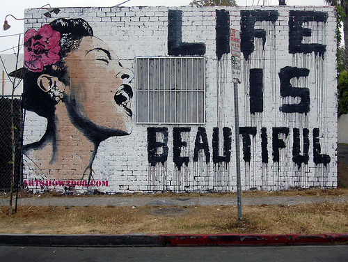
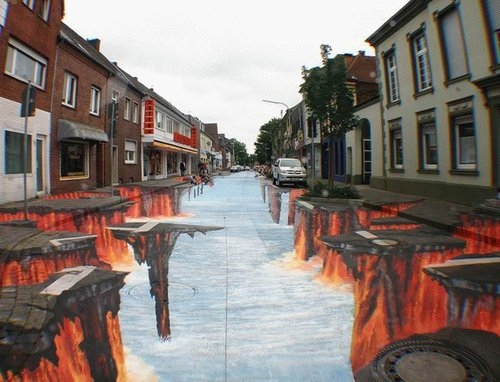

Fenomenul Graffiti
În anul 1971, publicaţia „New York Times” a realizat un material despre fenomenul graffiti care luase naştere pe străzile oraşului New York. În acel articol se vorbeşte despre un anume „artist graffiti” care semna cu pseudonimul TAKI 183. Identitatea lui nu era cunoscută, ştiindu-se doar că numele său era Demetrius şi că numărul 183 ar fi numărul străzii pe care locuia.
În anul 1973, sociologul Hugo Martinez, profesor la City College din New York, a intuit potenţialul acestor „artişti ai străzii”, fondând Uniunea Artiştilor de Graffiti cu scopul de a promova artiştii talentaţi din lumea graffiti-ului, prin intermediul unor expoziţii organizate de Uniune. Articolul din anul 1973 al revistei „New York”, intitulat „Parada graffiti”, semnat de Richard Goldstein, a fost o recunoaştere publică a potenţialului acestor „artişti ai străzii”.
Începând cu anul 1974 s-a încetăţenit stilul caracterizat prin realizarea de peisaje întregi de jur-împrejurul tag-urilor, toate acestea pe suprafaţa întreagă a metrourilor sau alte mijloace de transport în comun.
Arta graffiti şi-a început rapidul declin în anii ’80 când acest fenomen a fost absorbit de partea comercială şi de piaţa artistică a New York-ului. Anii ’80 au însemnat deci un regres în istoria mişcării graffiti-ului şi datorită schimbărilor majore care aveau loc în societatea americană. Cocaina a început a fi folosită tot mai des, iar traficul de droguri a dus la achiziţionarea armelor de foc. Toate aceste elemente se întâlneau pe străzi, viaţa pe stradă devenind din ce în ce mai periculoasă. Pe deasupra, legea a interzis comercianţilor vânzarea vopselelor minorilor, iar comercianţii erau obligaţi să depoziteze vopselele în locuri special amenajate, făcând astfel furtul din magazine mult mai dificil.
|  |  |
Totodată, bugetul oraşului New York destinat stopării mişcării graffiti s-a mărit, de acum înainte parcurile şi depourile fiind mult mai bine păzite. Au fost ridicate garduri electrice de protecţie, iar orice distrugere cauzată acestora era prompt reparată. Astfel, multe din zonele preferate ale artiştilor graffiti au devenit aproape inaccesibile. Procesul de îndepărtare al desenelor graffiti din New York a luat o nouă amploare, fapt ce a frustrat mulţi amatori de graffiti. Pe 12 mai 1989, oraşul New York a emis o decizie prin care erau scoase din folosinţă toate mijloacele de transport în comun care au fost victima mişcării graffiti. Acesta a fost începutul aşa-zisului curent al „vagoanelor curate”, prin care se dorea descurajarea „bandelor graffiti” şi curăţirea oraşului.
Dar cu toate aceste interdicţii, mişcarea graffiti nu a dispărut, ci din contră s-a omogenizat, transformându-se într-o goană după zone propice realizării de graffiti. S-au creat bande de tineri care deţineau anumite teritorii, marcate prin însuşi stilul folosit în desenele graffiti. Lupta pentru păstrarea acestor teritorii a dus la creşterea numărului de acte de violenţă, ajungându-se până la uzul armelor de foc.
Datorită lipsei vopselei şi a pericolului de a sta un timp prea îndelungat la locul unde se făceau desene graffiti, procesul artistic de realizare al tag-urilor a decăzut.
Graffiti ca metodă de exprimare a fost utilizată şi de generaţia muzicii rap. Muzica rap, originară din sudul Bronxului, New York, a apărut la mijlocul anilor ’70 şi a fost iniţial asociată curentului muzical denumit hip-hop. Această mişcare a inclus şi alte forme de manifestare, precum break dance-ul şi arta graffiti. Importarea culturii hip-hop de către ţările europene a dus şi la acapararea valorilor acestei culturi muzicale, printre care şi fenomenul graffiti.